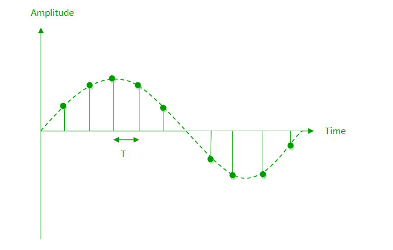
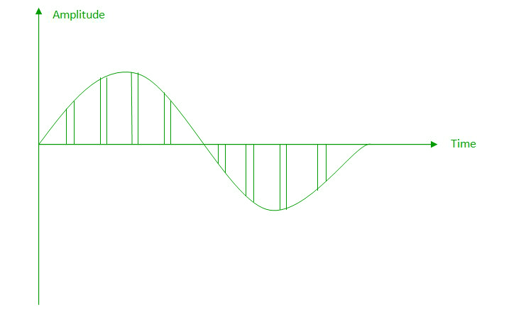
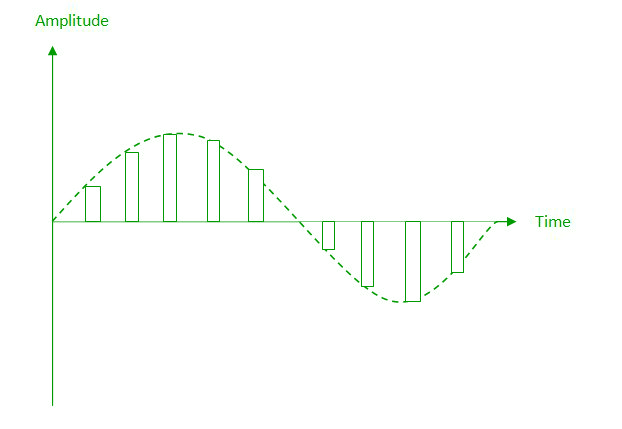
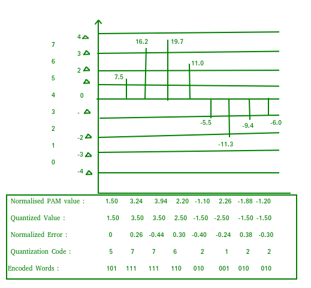
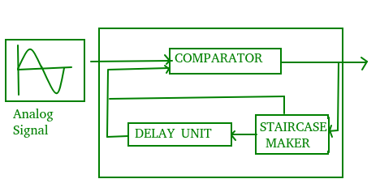
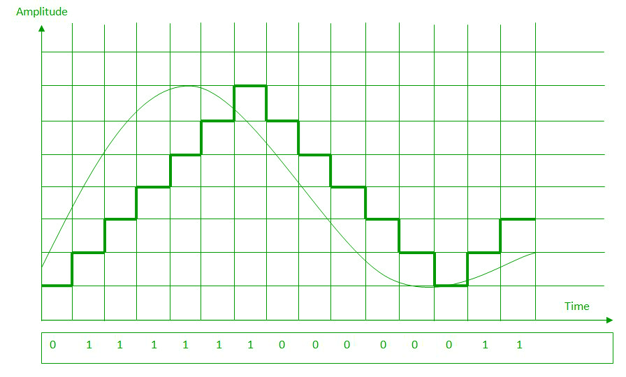
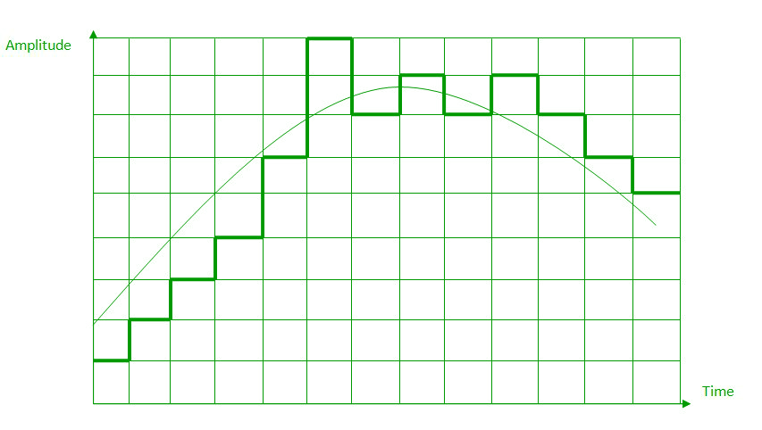

Digital Signal: A digital signal is a signal that represents data as a sequence of discrete values; at any given time it can only take on one of a finite number of values.
Analog Signal: An analog signal is any continuous signal for which the time varying feature of the signal is a representation of some other time varying quantity i.e., analogous to another time varying signal.
The following techniques can be used for Analog to Digital Conversion:
a. PULSE CODE MODULATION:
The most common technique to change an analog signal to digital data is called pulse code modulation (PCM). A PCM encoder has the following three processes:
- Sampling
- Quantization
- Encoding
Low pass filter :
The low pass filter eliminates the high frequency components present in the input analog signal to ensure that the input signal to sampler is free from the unwanted frequency components.This is done to avoid aliasing of the message signal.
- Sampling – The first step in PCM is sampling. Sampling is a process of measuring the amplitude of a continuous-time signal at discrete instants, converting the continuous signal into a discrete signal. There are three sampling methods:
(i) Ideal Sampling: In ideal Sampling also known as Instantaneous sampling pulses from the analog signal are sampled. This is an ideal sampling method and cannot be easily implemented.

(ii) Natural Sampling: Natural Sampling is a practical method of sampling in which pulse have finite width equal to T.The result is a sequence of samples that retain the shape of the analog signal.

(iii) Flat top sampling: In comparison to natural sampling flat top sampling can be easily obtained. In this sampling technique, the top of the samples remains constant by using a circuit. This is the most common sampling method used.

Nyquist Theorem:
One important consideration is the sampling rate or frequency. According to the Nyquist theorem, the sampling rate must be at least 2 times the highest frequency contained in the signal. It is also know as the minimum sampling rate and given by:
Fs =2*fh - Quantization –
The result of sampling is a series of pulses with amplitude values between the maximum and minimum amplitudes of the signal. The set of amplitudes can be infinite with non integral values between two limits.The following are the steps in Quantization:
- We assume that the signal has amplitudes between Vmax and Vmin
- We divide it into L zones each of height d where,
d= (Vmax- Vmin)/ L
- The value at the top of each sample in the graph shows the actual amplitude.
- The normalized pulse amplitude modulation(PAM) value is calculated using the formula amplitude/d.
- After this we calculate the quantized value which the process selects from the middle of each zone.
- The Quantized error is given by the difference between quantised value and normalised PAM value.
- The Quantization code for each sample based on quantization levels at the left of the graph.
- Encoding –
The digitization of analog signal is done by the encoder. After each sample is quantized and the number of bits per sample is decided, each sample can be changed to an n bit code.Encoding also minimizes the bandwidth used.
b. DELTA MODULATION :
Since PCM is a very complex technique, other techniques have been developed to reduce the complexity of PCM. The simplest is delta Modulation. Delta Modulation finds the change from the previous value.
Modulator – The modulator is used at the sender site to create a stream of bits from an analog signal. The process records a small positive change called delta. If the delta is positive, the process records a 1 else the process records a 0. The modulator builds a second signal that resembles a staircase. The input signal is then compared with this gradually made staircase signal.

We have the following rules for output:
- If the input analog signal is higher than the last value of the staircase signal, increase delta by 1, and the bit in the digital data is 1.
- If the input analog signal is lower than the last value of the staircase signal, decrease delta by 1, and the bit in the digital data is 0.

c. ADAPTIVE DELTA MODULATION:
The performance of a delta modulator can be improved significantly by making the step size of the modulator assume a time-varying form.A larger step-size is needed where the message has a steep slope of modulating signal and a smaller step-size is needed where the message has a small slope.The size is adapted according to the level of the input signal. This method is known as adaptive delta modulation (ADM).
